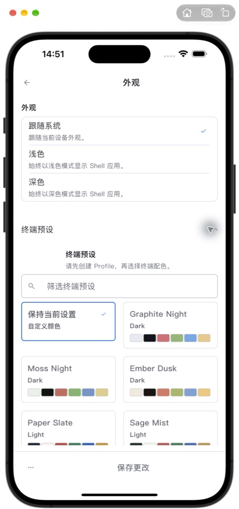
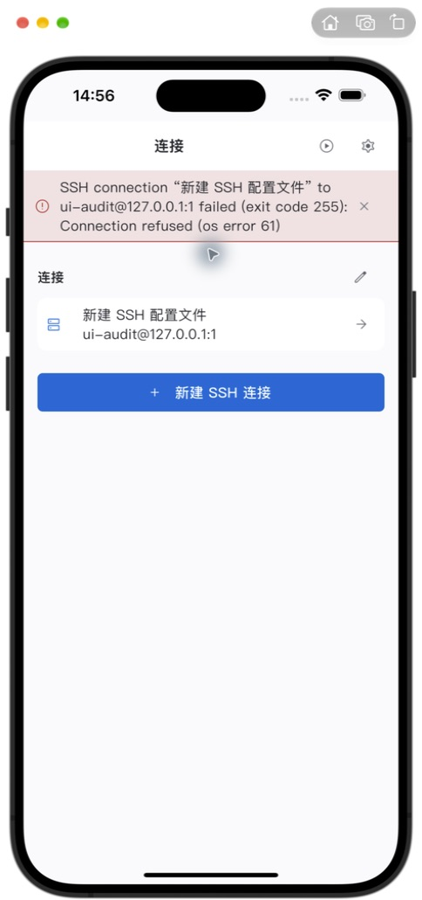
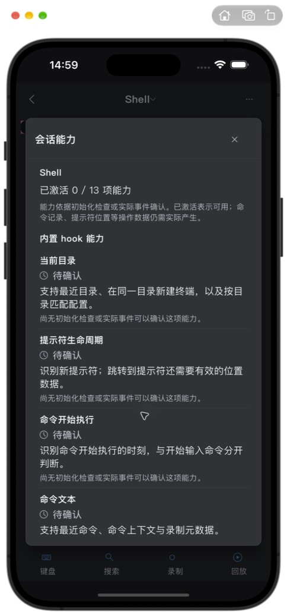
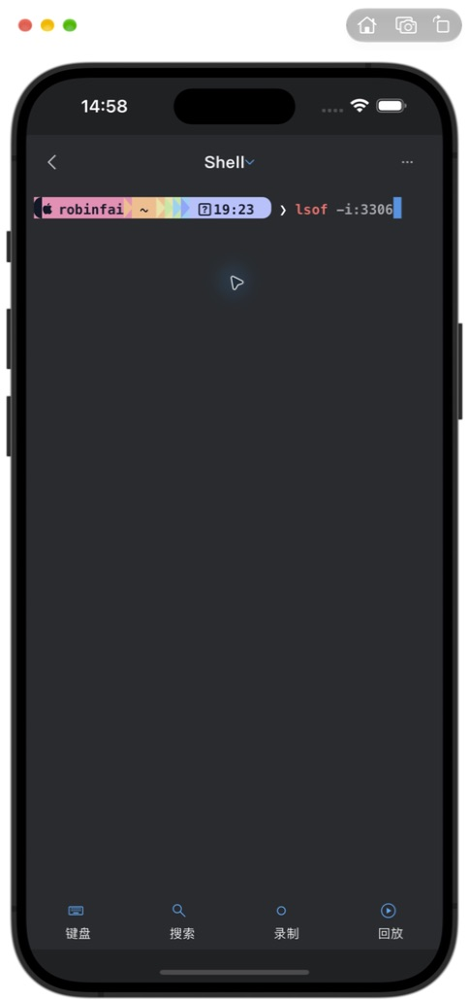
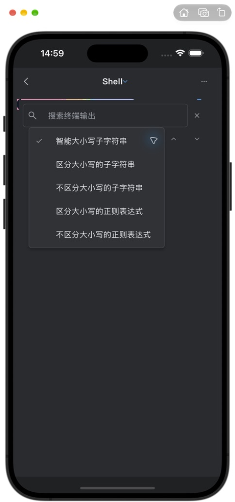

01 / 明确问题
页头标题左右偏移
看到的问题
连接首页的标题偏左；设置页则偏右。左右按钮数量不同，标题随剩余空间居中，页面之间视觉中心不一致。
最小调整方向 · 尚未实施
仅让标题以整屏中心对齐，保留按钮位置与点击区域。
实现定位
example/lib/ui/components/app_mobile_header.dart:31本轮仅做细节审查与标注：元素位置、必要文字、尺寸、间隔。所有证据均为本轮 iOS 模拟器实际截图；红框是网页叠加标记，原图未修改。没有调整产品 UI。
整体布局可保留。建议先看 01、04、05、07、10、12；其余属于精简与视觉微调候选。不要把所有候选默认当作需要修复的缺陷。
连接首页的标题偏左；设置页则偏右。左右按钮数量不同，标题随剩余空间居中，页面之间视觉中心不一致。
仅让标题以整屏中心对齐，保留按钮位置与点击区域。
example/lib/ui/components/app_mobile_header.dart:31“默认 Profile”在展开项标题与字段标签各出现一次；首页“连接”、外观页“外观”、预设展开后的“终端预设”也有类似重复。
同一层级保留一处标题；确有分组意义的标题保留。不要把不同页面的标题一律删除。
example/lib/features/shell/defaults_appearance_dialog.dart:529页头说明、下面的正文、选项副标题和卡片底部，都在重复解释“数据留在本机 / 同步可选”。单屏信息很多，但增量信息少。
保留一条总说明；在同步服务选项中只解释它新增的行为；保存后的生效说明单独保留一次。
example/lib/features/shell/defaults_appearance_dialog.dart:1546私钥空状态直接显示“No private key selected”。连接管理仍使用 Profile，而首页使用连接、保存后又称配置文件。回放入口进入后标题变为“回看”。启动同步页又使用“不使用数据服务并继续”，与设置中的“仅此设备”叫法不同。
先统一面向 iOS 用户的术语；把私钥空状态改为“未选择私钥”。Profile 是否保留英文由你决定。
example/lib/features/ssh/new_session_launcher.dart:2030安全页提到“Dock 提醒”；外观页提到“Shell 应用”“标签页和面板布局”，而同屏恢复开关说的是“连接”。这些文字与 iOS 当前导航语境不一致。
只调整平台文案：使用实际 iOS 行为和“Trail / 会话 / 连接”等已统一的名称。保留权限风险与行为边界。
example/lib/l10n/arb/app_zh.arb:658SSH Agent、X11 的说明与标题使用接近的字号，关闭状态仍完整展示多行参数细节。与上方较小的字段帮助文字相比，层次偏重。
先统一帮助文字字号和段间距；把只在开启后有用的参数说明放到展开状态，安全前提仍保留。
example/lib/features/ssh/new_session_launcher.dart从“管理连接 → 新建”只填主机和用户后保存，列表名称成为“新建 SSH 配置文件”。名称字段藏在更多设置里，用户很容易直接保存这个临时式名称。
无自定义名称时回退为主机或 user@host；已有用户自定义名称不变。
example/lib/features/profiles/profiles_sheet.dart操作名与快捷键按钮被拆成上下两层，右侧又保留较大空白；“未分配”同时出现在副标题和按钮里。普通文字大小下，每屏能查看的操作数偏少。
普通文字大小时尽量让名称与按键在一行，并保留足够点击区域；大字模式继续使用上下排列。去掉一处“未分配”。
example/lib/features/config/shortcut_editor.dart
打开原图 · 标框为位置示意，不是精确测量
页面提示“请先创建 Profile”，但下面仍排列筛选框和全部配色卡。前提缺失时，这块区域的可操作性不够明确。这里未将其判定为功能失效。
只在无 Profile 的空状态收敛展示：解释前提并提供明确下一步；有 Profile 时保留现有卡片。
example/lib/features/shell/defaults_appearance_dialog.dart:1016
打开原图 · 标框为位置示意，不是精确测量
本机端口拒绝连接后，顶部错误条显示完整英文 SSH 错误、exit code 和 os error，长名称与地址又拉长换行，把连接列表往下推。
主文案用一两行中文说明失败原因；技术错误保留在可展开详情中。保持关闭入口。
example/lib/features/shell/shell_screen.dart
打开原图 · 标框为位置示意，不是精确测量
多条能力都有“待确认”，并逐项重复“尚无初始化检查或实际事件可以确认这项能力”。状态相同时，这些重复文字显著增加滚动长度。
把共同的待确认说明放在分组开头；各能力保留名称、状态和各自作用。真实异常原因仍逐项展示。
example/lib/features/sessions/shell_capabilities_dialog.dart同一深色测试运行中，SSH 表单使用深色系统键盘，终端输入却出现浅色键盘。终端 TextInputConfiguration 未显式提供 keyboardAppearance。
终端输入连接跟随当前应用明暗主题；核对切换主题后重新获取焦点的键盘外观。只调整输入配置。
packages/ianvs_terminal/lib/src/terminal/terminal_viewport.dart:711
打开原图 · 标框为位置示意，不是精确测量
底部“键盘 / 搜索 / 录制 / 回放”的图标视觉上偏小，和页面大面积终端内容相比入口不够醒目。这里说的是图形大小，不是已证实的点击区域不足。
只考虑略增图标可见尺寸，保留现有标签、四等分布局和点击区域；不建议直接删除这些标签。
example/lib/features/shell/shell_screen_mobile_navigation.dart:120
打开原图 · 标框为位置示意，不是精确测量
五条选项反复出现“子字符串 / 区分大小写 / 正则表达式”，普通搜索也要读较长术语。当前尺寸能容纳，属于理解成本问题。
在不改变五种搜索语义的前提下缩短名称，例如“智能大小写”“匹配大小写”“忽略大小写”；正则选项明确保留“正则”。
example/lib/l10n/arb/app_zh.arb截图对应的是实际页面状态；“已检查”不表示完成了该功能的端到端测试。
| 步骤 | 页面 / 场景 | 状态 | 证据 |
|---|---|---|---|
| 01 | 连接首页：空状态 / 非空 / 活动会话 | 可用；标题偏移、命名与重复文字待梳理 | 截图 |
| 02 | SSH 新建与编辑：密码 / 自动认证 / 校验 | 可用；英文占位、默认名称待统一 | 截图 |
| 03 | SSH 更多设置与长表单滚动 | 可滚动到底；说明文字层次可收敛 | 截图 |
| 04 | 连接失败提示 | 显示完整错误；中文提示和长度待优化 | 截图 |
| 05 | 管理连接：空列表 / 非空列表 / 更多菜单 | 操作可达；术语不一致 | 截图 |
| 06 | 设置目录及常规 | 可用；标题中心和重复字段待梳理 | 截图 |
| 07 | 外观、终端预设、画布边距 | 可用；无 Profile 状态和桌面文案待梳理 | 截图 |
| 08 | 安全与权限：上下两屏 | 可滚动；平台文案待修正 | 截图 |
| 09 | 同步：本地状态 / 未保存服务表单 | 可用；重复说明较多，未提交远程登录 | 截图 |
| 10 | 外接键盘与快捷键录入弹窗 | 可用；列表密度可局部调整 | 截图 |
| 11 | 重置菜单 | 已检查；未执行重置 | 截图 |
| 12 | 回放库空状态 | 可用；“回放 / 回看”命名需统一 | 截图 |
| 13 | 终端、搜索条与搜索模式菜单 | 测试会话下可展示；图标、选项文字可优化 | 截图 |
| 14 | 会话切换 / 会话菜单 / 高级选项 | 间距整体稳定，未见重叠 | 截图 |
| 15 | 会话能力说明 | 可滚动；相同状态说明重复 | 截图 |
| 16 | 真实系统键盘：SSH / 终端 / 扩展按键 | 基础表单未被遮挡；键盘明暗不一致 | 截图 |
| 17 | 深色、大字（XXXL）、横屏终端 | 已抽查；所见页面未见黄色溢出条或控件重叠 | 截图 |
| 18 | 正式启动欢迎页 | 层次清晰，未见明显问题 | 截图 |
| 19 | 正式启动同步表单 | 表单可达；未提交远程登录 | 截图 |
| 20 | 正式入口开始使用 → 连接首页 | 已进入首页，与测试入口相同的标题偏移复现 | 截图 |
主要流程使用现有 test_driver/main.dart 运行正式页面；它绕过生产登录启动。终端会话补查使用仓库既有会话 fixture，并保留真实移动导航与控件，终端内容不代表真实 SSH 连接。
已检查中文、浅色与深色、系统键盘、XXXL 大字样本，以及横屏终端。没有覆盖其他 iPhone 尺寸、iPad、所有动态字体档位、VoiceOver 完整朗读与所有硬件快捷键。截图不能证明全部点击区域、对比度或无障碍合规。
真实 SSH 成功会话、SFTP 文件列表、已有录制的播放器及同步登录成功/失败状态没有完成验证；未连接外部服务器、未提交远程凭据、未执行重置或删除原有配置。连接失败截图来自本轮 ui-audit@127.0.0.1:1 的可控拒绝连接；该测试连接已清理。
共享代码中的通用 Profile 七分区编辑器不在当前 iOS 连接管理入口内，因此未以桌面页面代替 iOS 证据。图中鼠标光晕和模拟器外框不属于产品 UI。
临时会话入口已移除，Xcode 启动方案、字体大小、方向和键盘连接设置恢复；原有工程改动保留。正式入口已检查欢迎页、启动同步表单，并通过“开始使用”进入连接首页；应用停留在正式首页。